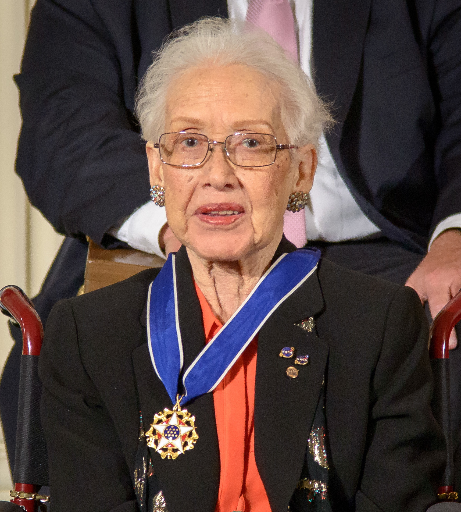

Creola Katherine Johnson (1918-2020) fue una reconocida física, científica espacial y matemática norteamericana que trabajó para la NASA, contribuyendo a realizar los cálculos necesarios para emprender algunas de las expediciones espaciales más importantes de la agencia en el siglo XX.
Desde muy pequeña, Katherine demostró sus capacidades y su vocación por los números y las matemáticas. Condicionada por la segregación racial que se vivió
en los Estados Unidos durante buena parte del siglo XX, se vio obligada a cambiarse de estado para poder así proseguir con sus estudios, pues los negros tenían
prohibido superar el octavo curso en su estado natal, Virginia Occidental.
Se graduó a la temprana edad de 14 años y con 15 años continuó sus estudios superiores en la denominada West Virginia State College, donde consiguió sus grados en Matemáticas y Francés a la edad de 18 años.
El profesor Claytor vio semejante potencial en Katherine que creó asignaturas de geometría analítica y aeronáutica específicamente para ella. Fue miembro de la hermandad de mujeres Alpha kappa alpha .
Después de su graduación, Katherine se trasladó a Marion (Virginia), a enseñar matemáticas, francés y música en una pequeña escuela pública para afroamericanos.
Comenzó un programa de posgrado en Matemáticas, pero tras quedar embarazada de su primer marido, con quien tendría 3 hijos, abandonó el programa.
Katherine entró en la NACA (posterior NASA), en 1953. Trabajó como calculadora humana, haciendo cálculos, entre otras cosas, para el alivio de ráfagas para aviones, en el colectivo de la agencia llamado "Colored Computers", que hacía referencia al color de la tez de aquellas mujeres que trabajaban con Katherine. En 1956, su marido murió. Más tarde, en 1858, la NACA pasó a llamarse NASA y se acaba con la segregación racial directa en la agencia. En 1959, se casó con el coronel James A. Johnson.
Además de su labor como matemática en la NASA, su papel cienfífico y su repercusión social fue más allá. En total fue coautora de veintiséis artículos científicos. La NASA mantiene una lista de los artículos más importantes escritos por Johnson con enlaces a su herramienta de búsqueda. Su influencia social como pionera en la ciencia espacial y la computación se ve reflejado en los premios que ha recibido y la cantidad de veces que ha sido presentada como un ejemplo para la sociedad. Hidden Figures (pinche aquí para ver el tráiler en v.o.), una película sobre su figura y sobre sus colegas afroamericanas de la NASA, basado en el libro de no ficción del mismo nombre de Margot Lee Shetterly, que se estrenó en enero de 2017. Cuenta la historia de Johnson y otras matemáticas afroamericanas (Mary Jackson y Dorothy Vaughan) que trabajaron en la NASA.
Para mí, Katherine Johnson es todo un referente. Conocí su historia gracias a la película previamente mencionada, y desde entonces he admirado su esfuerzo y su persistencia a la hora de trabajar y lograr sus objetivos. No es solo su capacidad para los números y los cálculos, sino su implicación con la NASA en todos los sentidos y su carácter fuerte, pues siempre trató de que nadie la sobrepasara.
